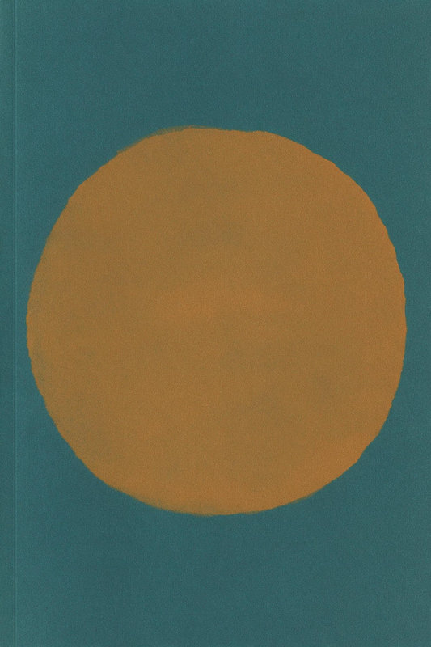
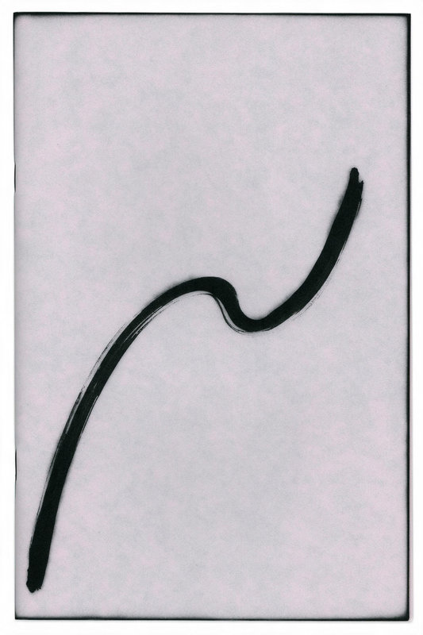

Pāriet uz saturu
Toms Apinis
Darbi
Toms Apinis
tulkotājs · Rīga
Izdomāta persona: piemērs, kā izskatās Protu lapa. Darbi ir ģenerēti ar AI.

Klusā osta
Oriģināls: izdomāts autors, FR → LV, 2024

Rīta burtnīca
Oriģināls: izdomāts autors, FR → LV, 2023